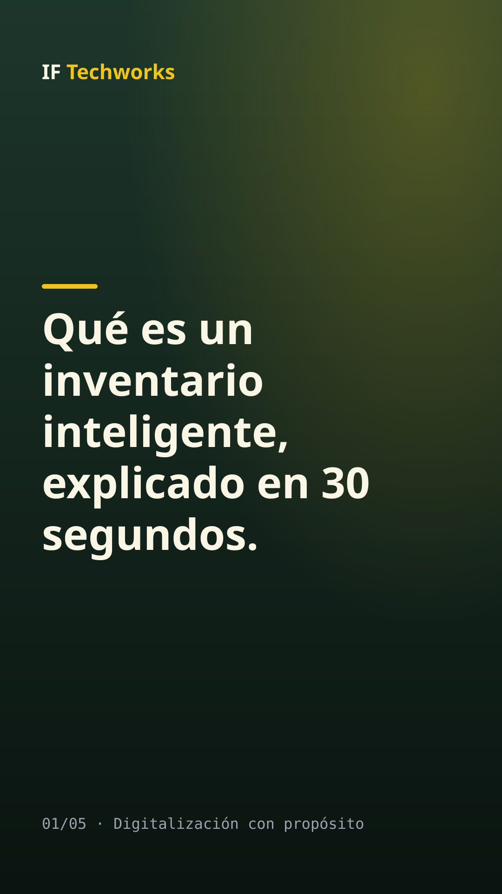
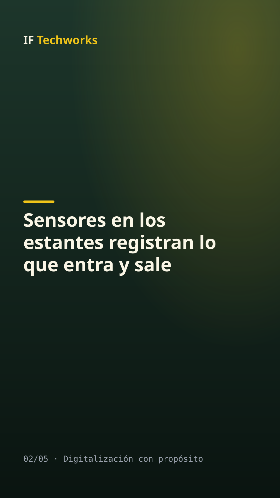
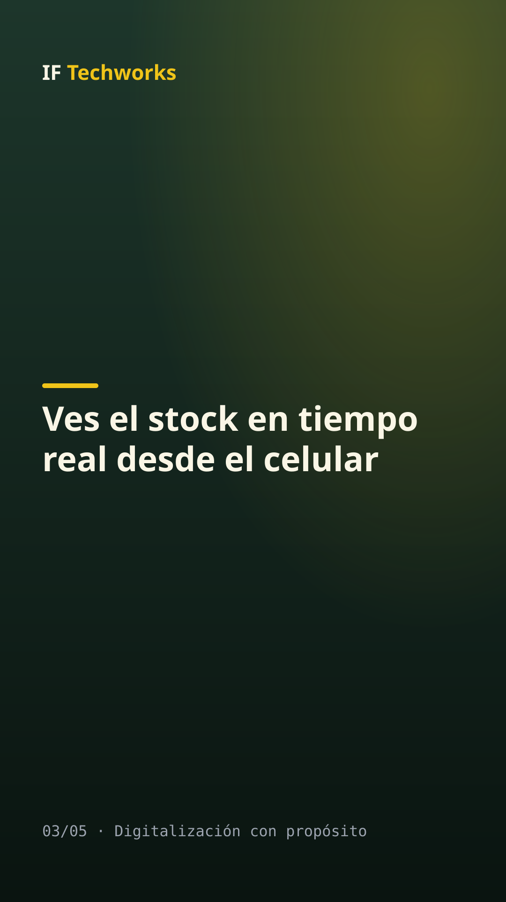
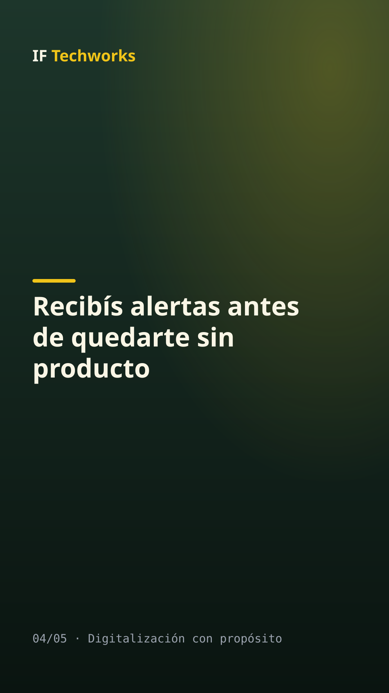

SIMULACIÓN: contenido generado por el backend simulado, no por ootto.
Qué es un inventario inteligente, explicado en 30 segundos.
Alternativas:




Qué es un inventario inteligente, explicado en 30 segundos. ✅ Sensores en los estantes registran lo que entra y sale ✅ Ves el stock en tiempo real desde el celular ✅ Recibís alertas antes de quedarte sin producto 👉 Agendá un diagnóstico sin compromiso. Link en la bio. #IFTechworks #DigitalizaciónConPropósito #PymesGuatemala #Centroamérica #Inventario
Qué es un inventario inteligente, explicado en 30 segundos. ✅ Sensores en los estantes registran lo que entra y sale ✅ Ves el stock en tiempo real desde el celular ✅ Recibís alertas antes de quedarte sin producto 👉 Agendá un diagnóstico sin compromiso. Link en la bio. #IFTechworks #DigitalizaciónConPropósito #PymesGuatemala #Centroamérica #Inventario
Aprobar: python main.py aprobar 20261028-232446-educativo-7b46 --por "Tu nombre"